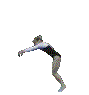

<IMG src="http://www6.cty-net.ne.jp/0www/001top/BORDER=0" alt="">

解像度 1280、×720
<IMG src="http://www6.cty-net.ne.jp/0www/001top/BORDER=0">
<IMG src="http://www6.cty-net.ne.jp/0www/001top/BORDER=0" alt="">